Imagine detecting diseases at their earliest stages — before symptoms even arise — and delivering faster, more accurate diagnostics transforming patient care. Through nanotechnology, scientists are crafting tools that work at the molecular level, offering breakthroughs in early detection, precise treatments, and improved outcomes. Join us as we explore how these tiny innovations are redefining what’s possible in modern medicine.
OUR MISSION
For many doctors, the physics behind modern diagnostics remains unexplored territory. As one Barts physician put it, ‘Many of the tools we use, we treat as magic’ (personal communication). This isn’t due to a lack of curiosity, but because medical training emphasises biological sciences over physical principles. Emerging nanotechnologies provide critical insights, yet the underlying physics behind these advancements can be often overlooked.
Nanotechnology is evolving diagnostics, from contrast agents that enhance image resolution to nanoscale tools for early disease detection. Understanding the physics behind diagnostic tools turns them from black-box instruments into powerful extensions of clinical practice. With clear and accessible explanations, this platform helps doctors move beyond simply using technologies to truly appreciate how they work.
We hope to encourage collaboration and awareness between medical professionals and scientific researchers, providing a platform where nanodiagnostics can be explored, understood, and ultimately translated into real-world applications.
Nanotechnology is improving medical diagnostics by operating at the molecular scale, where materials and devices are designed to interact directly with biological systems. This field focuses on structures and tools at the scale of nanometres — billionths of a metre.
It is precisely at this scale that biology itself operates: DNA molecules, proteins, and cells function in the nanoscale world, making it the perfect size for technologies to interact seamlessly with these systems.
A Look Inside
The defining feature of nanoparticles is their unique physical and chemical properties, which arise due to their small size.
For example, at the nanoscale, materials can exhibit enhanced surface area, increased reactivity,
or even entirely new optical or magnetic behaviours that do not appear at larger scales.
Magnetic nanoparticles are superparamagnetic
This means they only become magnetised in the presence of an external magnetic field.
Large magnetics, such as fridge magnets are ferromagnetic. In ferromagnetic particles magnetic domains form where froups of atoms align their tiny atomic magnets (spins) in the same direction. Even when the external field is removed, these domains remain aligned, making the material permanently magnet.
No Magnet
Magnet Applied
Magnet Removed
When at the nanoscale the material is so small that it consists of just one magnetic domain, meaning all atomic spins must align together
However, at this tiny scale, thermal energy is strong enough to disrupt the alignments, causing tthe nanoparticle to lose it magnetisation when no external field is applied.
No Magnet
Magnet Applied
Magnet Removed
Click anywhere to close
Nanoparticles, particularly those made of noble metals like gold and silver, exhibit unique optical properties due to a phenomenon known as localised surface plasmon resonance.
Localised surface plasmon resonance occurs when light interacts with free electrons on the surface of nanoparticles, causing them to oscillate collectively. The size and shape of the nanoparticle determine the wavelength of light it absorbs and scatters. Gold nanoparticles used in lateral flow assays are typically around 20–40 nm in diameter, allowing them to absorb blue-green light (~450–550 nm) and reflect red light (~600–700 nm). When these nanoparticles bind to a target biomarker and cluster together, the spacing between them decreases, altering how their surface electrons interact with light.
Click anywhere to close
Imaging: Illuminating the unseen
Diagnostic imaging has long been a cornerstone of modern medicine, offering a non-invasive window into the human body and has been indispensable in diagnosing and monitoring diseases. However, these methods often face limitations in resolution and contrast, particularly when distinguishing between similar tissues. Nanotechnology offers solutions to these challenges, introducing advanced contrast agents and multifunctional tools that enhance image clarity and diagnostic accuracy.
Magnetic Resonance Imaging (MRI)
MRI uses powerful magnetic fields and radio waves to create highly detailed 3D images of the body, with 360° coverage. This non-invasive imaging technique is useful for imaging area where the soft tissue is abundant, such as the brain and muscles.
An MRI system comprises four main components: a main magnet generated by superconducting magnetic coils, gradient coils that generate secondary magnetic fields to modify the primary field, radiofrequency coils that transmit pulses to excite protons, and computer systems that control radio/gradient pulses, collect data, and process images.
MRI utilises the magnetic properties of hydrogen nuclei (protons), which are abundant in water and fat, to produce images.
These nuclei behave like spinning tops, generating their own small magnetic fields.
In the body, hydrogen protons align randomly but experience Zeeman splitting when placed in a strong magnetic field
This means they align either parallel or antiparallel to the field, depending on their spin (an intrinsic property related to angular momentum).
Because the lower energy parallel state is more stable, a slightly larger proportion of protons end up aligned this way. This imbalance of aligned protons creates a net magnetisation vector that forms the basis for MRI signal detection.
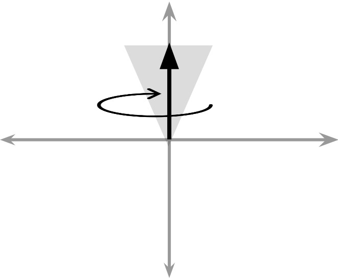
To generate a measurable response, a radiofrequency pulse is applied at a specific frequency, known as the Larmor frequency. When protons absorb this energy, some are excited from the lower-energy parallel state to the higher-energy antiparallel state, temporarily tipping the net magnetisation away from alignment with the external field.
Once the pulse is turned off, the protons return to their original state. The net magnetisation vector spirals back emitting electromagnetic signals.
(when a conductor cuts through magnetic field lines as the field roates, it experiences a force that pushes electrons within the conductor creating an electrical current
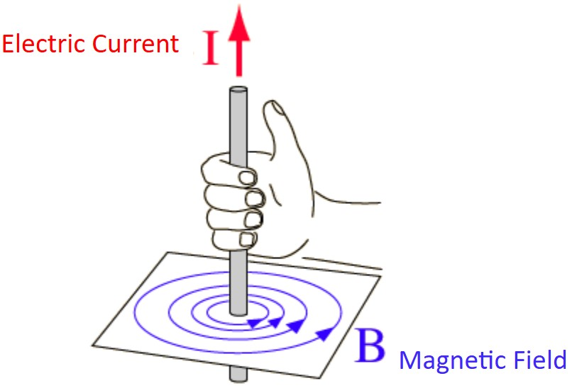
Gradient coils vary the magnetic field in small increments, allowing for the scanning of different slices of the body. The intensity of the electromagnetic signals is detected by receiver coils and used to create cross-sectional images of internal structures which are combined into a 3D image.
MRI: Nanoparticle Contrast Agents
Despite its ability to visualise tissues, MRI struggles to differentiate subtle differences, particularly between healthy and cancerous cells. This is because it relies on relaxation times — how quickly protons return to their resting states — which can be similar for many tissues.
A solution to this problem is contrast agents, which are generally intravenously injected and temporarily alter the magnetic environment surrounding them.
Traditionally, gadolinium-based contrast agents are used in MRI. Gadolinium is a paramagnetic metal with unpaired electrons that influence the relaxation times of surrounding protons, improving tissue contrast. However, the toxicity risks of gadolinium necessitate the development of alternative contrast agents — particularly those using nanotechnology.
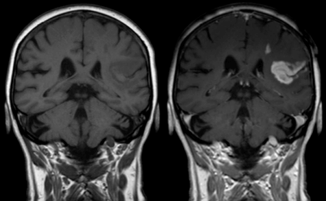
Two types of relaxation times influence this contrast:
T1 Relaxation: Describes how quickly protons realign with the external field after excitation
T2 Relaxation: Describes how fast protons lose synchronisation with one another, dirupting the MRI signal
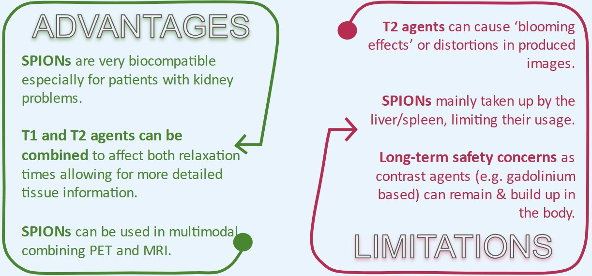
Paramagnetic nanoparticles, such as gadolinium-based nanostructures, enhance T1 relaxation. These materials contain unpaired electrons, which generate fluctuating local magnetic fields that interact with nearby hydrogen nuclei. This interaction increases the rate at which protons realign with the external field after excitation. Consequently, T1-weighted MRI images show areas with paramagnetic nanoparticles as brighter regions.
Click anywhere to close
SPIONs are used as contrast agents due to their strong magnetic susceptibility which influences the relaxation times of nearby hydrogen nuclei. They exhibit superparamagnetism, meaning they align with an external magnetic field but do not retain magnetisation once the field is removed, preventing long-range magnetic interactions. They are a type of T2 contrast agent and are typically 5-50 nm in size with an iron oxide core and a coating of biocompatible, water-soluble materials, often polymers like Dextran, to enhance targeting efficiency.
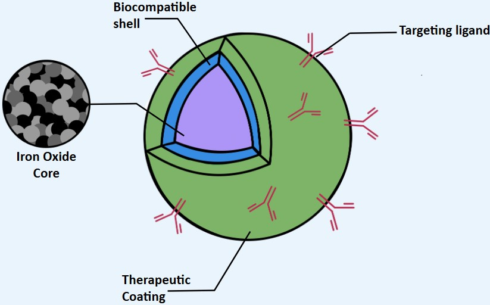
When placed within an external magnetic field, SPIONs create local variations in the surrounding magnetic field which cause nearby hydrogen nuclei to resonate at slightly different frequencies. Because of this, the nuclei lose synchronisation more quickly, causing a faster decay of the MRI signal.
Intravenously injected SPIONs can be designed for active or passive targeting.
Passive targeting results in the accumulation of SPIONs primarily in the spleen and liver.
Active targeting involves SPIONs functionalised with ligands/antibodies to bind to specific cells such as tumours.
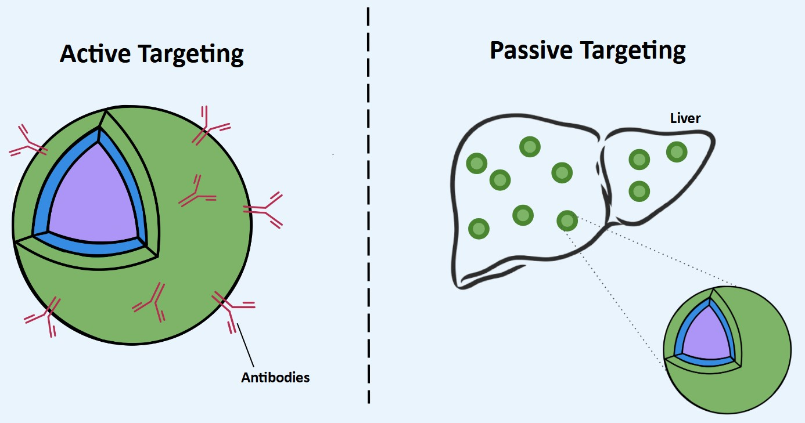
Click anywhere to close
Computed Tomography (CT)
CT is an imaging procedure that combines X-ray technology with computer processing to produce detailed cross-sectional images of the body. During a CT scan, a narrow X-ray beam rotates around the body, capturing data over 360°. A computer then processes this data to generate detailed images of bones, blood vessels, and soft tissues.
CT scanners are composed of three main parts: an X-ray tube that converts moving electrons (electricity) into X-ray photons, a gantry rotating around the patient (containing the X-ray tube and photon detectors), and a computer that processes signals from the detectors to generate the 2D cross-sectional images.
The X-ray tube sends a beam of radiation through the body at multiple angles. As the photons pass through different tissues, the intensity of the X-ray changes (attenuates) depending on the density of the tissue it passes through. The atomic number of the elements in the tissue also influences attenuation. Elements with higher atomic numbers (e.g. calcium) have more electrons and are more likely to have photoelectric interactions with X-rays.
The photoelectric effect is one of the primary interactions of X-ray photons with tissue. An X-ray photon collides with an inner-shell electron of an atom, transferring all its energy to eject the electron. This leads to absorption of the X-ray, which increases contrast in denser materials, such as bones and tissues containing contrast agents. Tissues like muscle and fat have lower atomic numbers and experience less absorption, appearing darker in the scan.
After passing through the body, the attenuated X-rays are captured by detectors surrounding the body and are converted into digital signals. The intensity of the received X-ray reflects the unique composition of the area being scanned. The produced image is essentially a map of how much the X-ray was absorbed or scattered by tissues.
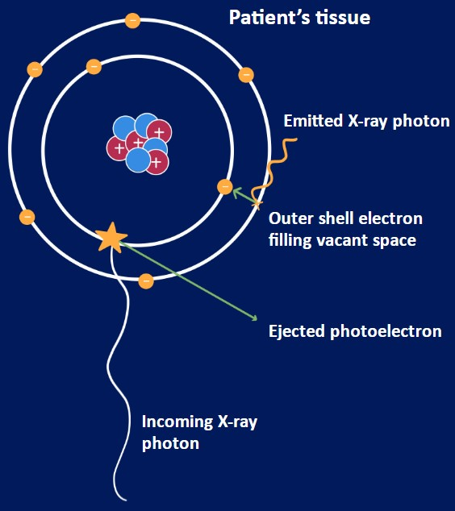
CT: Nanoparticle Contrast Agents
The clarity of these images primarily depends on contrast. Soft tissues have similar attenuation coefficients and cannot be fully differentiated without contrast agents that temporarily alter their attenuation coefficient.
Iodine-based compounds are the most commonly used contrast agents in CT imaging. Iodine has a relatively high atomic number (Z = 53), which increases the probability of photoelectric absorption, enhancing contrast between different tissues.
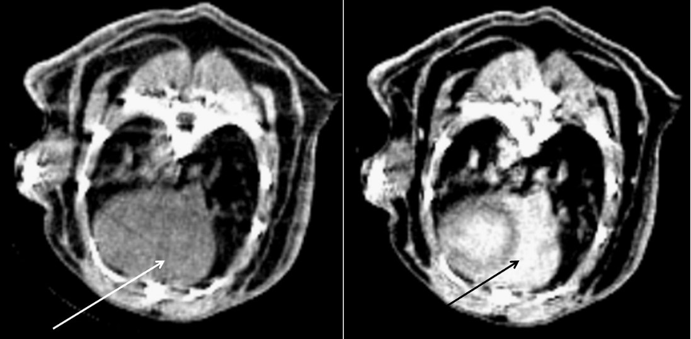
Gold nanoparticles have emerged as a highly effective alternative to traditional iodinated contrast agents due to their higher atomic number (Z = 79), which significantly enhances X-ray attenuation. Not only do they increase the likelihood of the photoelectric effect, they also combat some effects of Compton scattering.
Compton scattering occurs when X-ray photons collide with outer electrons in tissue, causing the photons to change direction. This scattered radiation contributes to noise in the image and reduces contrast. At higher X-ray energies, Compton scattering becomes the dominant interaction, but gold’s high atomic number ensures strong attenuation and allows for clearer imaging.
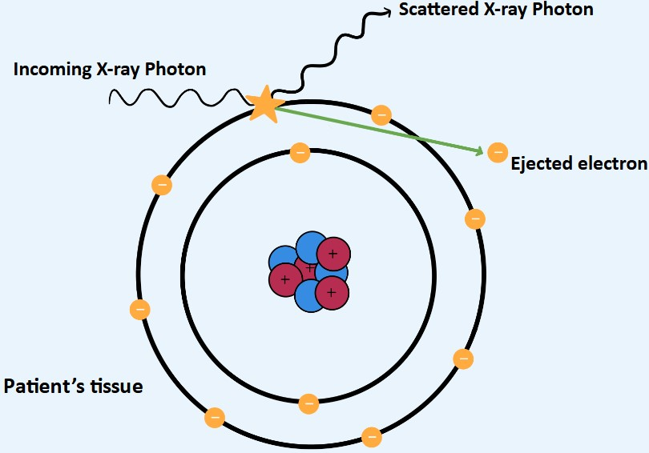
Gold nanoparticles offer unique advantages due to their small size and customisable surface properties. They achieve strong X-ray absorption while remaining small enough to circulate efficiently in the bloodstream. They can be functionalised with biocompatible coatings to increase circulation time and prevent rapid clearance by the immune system. Modifying them further with ligands or antibodies makes them highly effective at detecting tumours.
Despite being biologically inert, the high cost of gold nanoparticles remains a barrier to widespread adoption. Bismuth nanoparticles have an even higher atomic number (Z = 83) and are a cost-effective alternative to both iodine and gold. Ongoing research should prioritise the optimisation of their circulation time to balance effective imaging and safety.
Positron Emission Tomography (PET)
PET is a powerful imaging modality that provides insight into metabolic processes within tissues. Unlike anatomical imaging techniques such as CT and MRI which visualise structural details, PET enables the detection of biochemical processes at a molecular level. This allows diseases to be detected before physical abnormalities appear.
The main components of a PET scanner include the gantry, which houses the detector system, scintillation crystals that convert incoming gamma photons into light, and photomultiplier tubes that transform this light into electrical signals.
Before the scan, the patient is injected with a radioactive tracer, usually fluorodeoxyglucose, which has a chemical structure similar to that of glucose. The tracer is taken up by metabolising cells and accumulates in tissues. After waiting for the tracer to be distributed through the body, the patient is placed in the PET scanner. The radiation emitted by the tracer will then be detected. This process is beta-plus decay, where a positron is emitted.
Paramagnetic nanoparticles, such as gadolinium-based nanostructures, enhance T1 relaxation. These materials contain unpaired electrons, which generate fluctuating local magnetic fields that interact with nearby hydrogen nuclei. This interaction increases the rate at which protons realign with the external field after excitation. Consequently, T1-weighted MRI images show areas with paramagnetic nanoparticles as brighter regions.
Click anywhere to close
PET: Nanoparticle Contrast Agents
Whilst PET scans provide insight into metabolic processes, they lack anatomical detail. Contrast agents enhance visualisation, improving differentiation between tissues and aiding in tumour detection, as metabolic activity can vary between malignant and healthy cells. Alongside this, PET contrast agents can direct the radioactive tracer to specific tissues/regions of interest.
Traditionally, the radioactively labelled biological molecules mentioned above have been used as contrast agents, however, PET imaging has been improved by the development of alternative contrast agents alongside the tracers.
Gold nanoparticles (as explored in CT imaging), can be functionalised with biological markers to improve tissue specificity and enhance overall image resolution.
When labelled with radioactive isotopes, quantum dots can also be used in PET imaging, offering multimodal imaging that combines functional (through PET) and anatomical (through fluorescence) insights. They can be engineered by attaching specific ligands to target tissues or cells, enhancing the precision and sensitivity of PET scans.
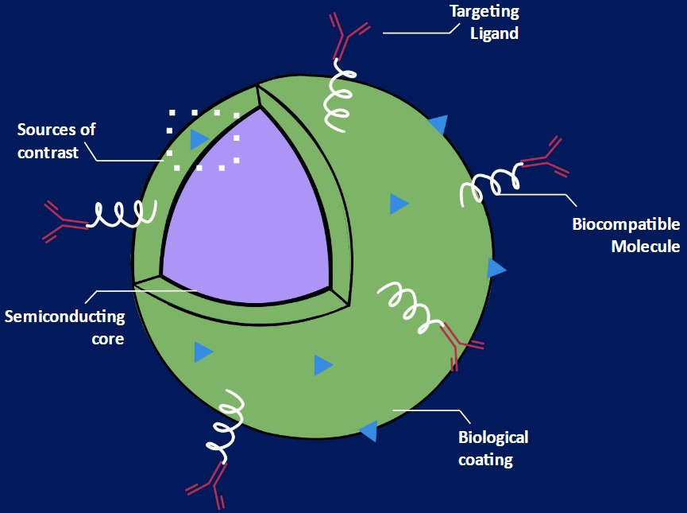
When excited by light, quantum dots (semiconductor nanoparticles) emit stable fluorescence with colours dependent on their size, enabling simultaneous imaging of multiple biomarkers. Smaller quantum dots emit blue light, whilst larger ones emit red. Their brightness and stability outperform traditional fluorescent dyes, making them ideal for long-term tracking of molecular changes.
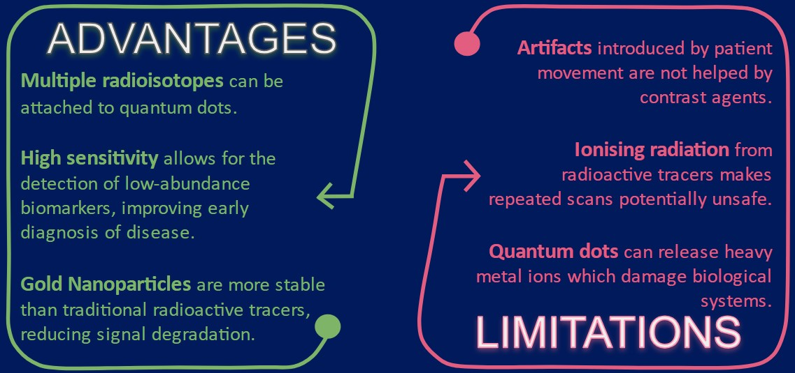
Nanoparticles, particularly those made of noble metals like gold and silver, exhibit unique optical properties due to a phenomenon known as localised surface plasmon resonance.
Localised surface plasmon resonance occurs when light interacts with free electrons on the surface of nanoparticles, causing them to oscillate collectively. The size and shape of the nanoparticle determine the wavelength of light it absorbs and scatters. Gold nanoparticles used in lateral flow assays are typically around 20–40 nm in diameter, allowing them to absorb blue-green light (~450–550 nm) and reflect red light (~600–700 nm). When these nanoparticles bind to a target biomarker and cluster together, the spacing between them decreases, altering how their surface electrons interact with light.
Click anywhere to close
Point-of-care Diagnostics
Point-of-care (PoC) diagnostics reshape how and where healthcare can be delivered. By enabling quick, accurate testing outside of traditional laboratories, PoC technologies offer the potential for disease diagnosis and monitoring in a wide range of settings. Whether used in remote clinics, emergency rooms, or even at home, these innovations allow for convenient, accessible care. Nanotechnology has facilitated this shift with the development of smaller, faster portable devices that are more sensitive than their conventional counterparts.
Lab-on-a-chip Systems (LoC)
Traditional diagnostic methods rely on large laboratory equipment to process biological samples. Disease diagnosis often involves multiple steps, including sample collection, preparation, analysis, and detection, each requiring different instruments and trained personnel. Patient samples must be transported from healthcare facilities to specialised sites where tests can be conducted. This setup does not accommodate time-sensitive diagnostic needs and is particularly disadvantageous during infectious outbreaks. Moreover, conventional diagnostic centres require sophisticated infrastructure and expensive reagents, making them impractical for resource-limited and remote locations.
Nanotechnology addresses these challenges through lab-on-a-chip (LoC) systems by integrating all diagnostic steps into a single, compact device. These microfluidic-based systems use nanoscale fluid manipulation, biochemical sensing, and optical detection to process tiny sample volumes with minimal resources
The core principle behind lab-on-a-chip technology is microfluidics, the precise control of fluids in microscale environments. At this small scale, fluids exhibit the unique characteristics of laminar flow, where fluids move in smooth, predictable layers without turbulence. Unlike in larger fluidic systems, where mixing occurs through chaotic eddies, microfluidic systems rely on diffusion — the gradual movement of molecules from areas of high to low concentration.
This makes it possibe to control sample transport with high precision, ensuring the reagents mix efficiently and that chemical reactions occur under controlled conditions
For example, a patient sample containing a mix of normal and cancerous cells is introduced into the device, where they travel through precisely engineered channels. Within the chip, screening and detection regions identify cancerous biomarkers, while signal translation converts molecular interactions into measurable data. The last step involves signal analysis and data processing to enable the identification of cancer cells.
Unlike traditional laboratory setting, LoC devices do not require mechanical pumps to drie liquid flow and instead rely on capillary action. This natural manipulations of external fluids allows for an energy-efficient portable system.
Additionally, lab-on-a-chip devices can be paired with smartphones, allowing patients or healthcare workers to upload and analyse diagnostic data in real time.
Microchannels can also be coated with functionalised nanomaterials that selectively bind to specific disease biomarkers, enabling the detection of low-concentration biomarkers that conventional assays might miss.
Lab-on-a-chip devices use optical detection to analyse samples, such as fluorescence and absorbance spectroscopy. By detecting changes in light emission and absorption, biomolecular interactions can be actively tracked. Fluorescence-based detection works by exciting specific molecules with a light source, causing them to emit light at a longer wavelength. This emitted signal is then measured, providing a quantifiable indication of a target biomarker. Absorbance spectroscopy works by measuring how much light is absorbed by a sample at specific wavelengths.
Chaotic eddies don’t occur in microfluidics because the small length scales result in a low Reynolds number, meaning viscous forces — the resistance of fluid to flow — completely dominate over inertial forces — the tendency of a fluid to keep moving in the same direction unless acted upon. Since viscosity acts to dissipate energy and smooth out velocity differences, any disturbances in the flow are quickly damped out before they can develop into turbulence.) As a result, fluid moves in parallel streamlines, maintaining laminar flow rather than chaotic mixing
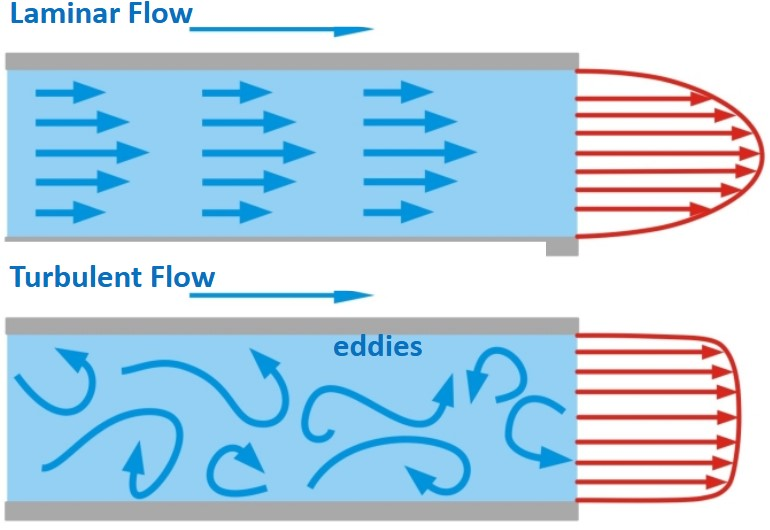
Click anywhere to close
LoC: PCR Testing
LoC devices are particulary valuable for infectious disease detection, where rapid pathogen identification is crucial for outbreak control. These systems incorporate miniaturised thermal cycling mechanisms to perform polymerase chain reaction (PCR), allowing amplification of viral or bacterial genetic material directly at the point of care
Traditional PCR requires bulky thermal cyclers, but nanoparticle-enhanced LoC PCR significantly improves heat transfer efficiency. By using materials with high thermal conductivity, such as gold or silver nanoparticles, (they contain large number of "free electrons" that can readily move throughout the metal, efficiently transfering thermal energy) these systems enable rapid heating and cooling, reducing reaction times and increasing sensitivity. This makes LoC PCR particularly effective for diagnosing infections such as tuberculosis, influenza, and COVID-19 in minutes instead of hours.
On the other hand, LoC devices face manufacturing challenges due to the precision required in fabricating microfluidic channels and integrating multiple detection mechanisms. Variations in sample viscosity, temperature, or surface interactions can impact performance, requiring careful calibration for reliable application. Furthermore, while nano-enhanced PCR-based testing within LoC systems significantly improves speed and efficiency, its integration into miniaturised platforms presents scalability issues. Precise thermal regulation at the nanoscale is difficult to achieve consistently across different device designs. Optimising their concentration and distribution is essential, as excessive nanoparticle use can interfere with enzyme function.
Lateral Flow Assay (LFA)
Nanobiosensors are a key advancement in PoC diagnostics, offering rapid and highly sensitive detection of biological markers such as proteins, DNA fragments, and antigens. Currently, two main diagnostic methods are widely used: enzyme-linked immunosorbent assays (ELISA) and lateral flow assays (LFAs). ELISA is known for its high sensitivity and specificity but is impractical for rapid, on-site testing as it requires specialised equipment, multiple processing steps, and skilled workers. LFAs do offer a simple and inexpensive alternative for point-of-care diagnostics, and while traditional LFAs are widely used for conditions like malaria and HIV, their sensitivity is limited. This makes it difficult to detect low-concentration biomarkers in early disease stages.
Nanotechnology has enhanced the capabilities of lateral flow assays, incorporating gold, silver, or other nanomaterials to amplify detection signals, allowing for disease identification even at low biomarker concentrations. Gold nanoparticles facilitate this through their unique optical properties. When functionalised with antibodies or DNA probes, these nanoparticles selectively bind to target biomarkers in a sample, creating a highly visible colour change, reducing the risk of false negatives and allowing for clear, reliable results.
Similar to LoC systems, LFAs rely on capillary action, but instead of using microchannels, they utilise porous materials such as nitrocellulose strips through which liquid samples diffuse evenly across
At the test line, specific antibodies or DNA probes are anchored in place to capture only the target biomarker. When nanoparticles are attached to additional antibodies or DNA strands, they stick to the captured biomarker, forming small clumps at the test site. This accumulation of nanoparticles causes a visible colour change due to a process called plasmon resonance.
This plasmonic coupling shifts the absorption spectrum toward longer wavelengths, reducing the reflection of red light, and making the colour appear dark blue or purple. This shift enhances detection sensitivity by amplifying the contrast, making even low-concentration biomarkers more easily identifiable. Unlike conventional dyes, which can fade or degrade, plasmonic nanoparticles provide a stable and highly visible signal without requiring additional reagents.
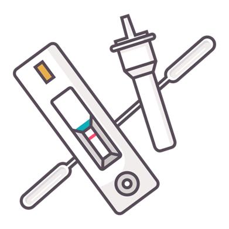
While nanoparticle-enhanced biosensors offer improved sensitivity and rapid detection, their ability to quantify biomarker concentrations precisely has its limitations, restricting their use in cases requiring highly specific or continuous measurements. Moreover, maintaining stability and reproducibility across different sample types poses a challenge, as environmental factors such as humidity, pH fluctuations, and non-specific binding can affect signal reliability.
Wearable Devices
Traditional health monitoring relies on periodic measurements taken during clinic visits, limiting the ability to track real-time physiological changes. For instance, parameters such as hydration, stress, and cardiovascular are assessed intermittently through external monitors or laboratory tests. Although these methods provide valuable insights, they only offer snapshots of a patient’s health rather than continuous data, making it difficult to detect rapid changes or subtle trends over time.
Continuous glucose monitors
Wearable devices can extend diagnostics into continuous patient monitoring by integrating nanoscale sensors. Traditionally, diabetic patients monitor their blood sugar levels through finger-prick tests at set intervals. However, nano-enhanced continuous glucose monitors use nanomaterial-based electrochemical sensors to measure glucose levels in interstitial fluid, eliminating the need for frequent blood sampling.
These sensors detect glucose molecules through enzyme-coated nanostructures, which generate an electric signal proportional to glucose concentration.
Electrochemical sensors rely on nanoscale electrodes, which enhance surface interactions and allow for more efficient charge transfer when biomarkers bind to the sensor surface.
This allows even minute changes in glucose or lactate levels to be detected.
Smart Dressings
Smart bandages are upgraded dressings that not only cover wounds but also monitor them. Nanomaterial-based sensors can detect pH shifts, bacterial growth, and inflammatory responses.
These physiological changes can be measured using colourimetric nanosensors, changing colour in response to variations in acidity or bacterial metabolites, making infection visually detectable. In addition, electrochemical sensors in these bandages can detect bacterial activity through ion exchange reactions, where bacterial metabolism alters the local ionic environment, producing measurable electrical changes. These interactions rely on the principles of electrochemical signal transduction, where nanosensors convert biochemical activity into quantifiable electrical signals.
While smart bandages are still in the experimental stage, researchers at Tufts University and the University of Bath have been testing prototypes with the potential for earlier detection and recovery, reducing infection-related complications.
Similarly, smart patches embedded with nanosensors are being designed to monitor hydration levels by analysing ion concentrations in sweat, providing real-time feedback on electrolyte balance and dehydration risk. Sweat is diffused through porous nanostructures toward sensor sites for biochemical analysis, eliminating the need for mechanical pumps. Optical sensing techniques, such as surface plasmon resonance and fluorescence spectroscopy, further enhance detection capabilities by analysing how light interacts with nanomaterials
Researchers are also developing nanoparticle-based stress sensors that detect cortisol fluctuations in sweat, offering a direct biochemical assessment of stress responses rather than relying on indirect physical indicators such as heart rate or skin conductivity.
As nanotechnology continues to advance, researchers are also working on integrating data processing capabilities into wearable diagnostic platforms. By combining nanosensor data with machine learning algorithms, future devices could provide personalised health insights and predictive analytics.
Despite advancements, wearable nanotechnology-based diagnostics face hurdles in durability and long-term stability. Sensors embedded in smart patches or bandages must withstand mechanical stress from movement and environmental exposure while maintaining sensitivity over time. Additionally, integrating real-time data processing into compact, low-power devices presents engineering challenges that must be resolved before widespread adoption.
Genetic testing: Advancing Precision Treatment
Genetic testing plays a crucial role in personalised medicine, offering insights into a patient’s unique genetic makeup to guide diagnosis and treatment. Advances in nanotechnology have significantly enhanced the precision and accessibility of these tests, enabling the rapid identification of genetic mutations, pathogens, and disease markers. By integrating nanoscale tools, genetic testing is moving beyond the laboratory, bringing complex analyses closer to clinical and point-of-care settings.
Nanopore Sequencing
Genetic testing has traditionally relied on PCR and fluorescence-based assays to detect specific DNA sequences. While these methods are highly sensitive, they require multiple amplification steps to detect low-abundance genetic material, increasing the risk of contamination, false positives, and signal degradation. Another major challenge lies in efficiently isolating target DNA from biological samples. Standard techniques such as centrifugation, filtration, or chemical precipitation require specialised laboratory equipment and long processing times
Unlike PCR, which amplifies DNA through multiple thermal cycles before detection, nnopore sequencing can directly analyse genetic material in real-time without amplification. This not only reduces processing time but also minimises contamination reisks associated with multiple handeling steps.
Nanopore sequencing works by passing a single strand of DNA or RNA through a nanoscale pore embedded in an electrically insulating membrane.
An external voltage is applied by placing two electrodes on opposite sides of the nanopore membrane, generating an electric field that exerts force on the negatively charged DNA, pulling it through the nanopore in a process known as electrophoretic transport.
This causes ion in the solution to move, creating an electric current
DNA is negatively charged due to its phosphate backbone. Therefore when in the presence of an electric field, it will move toward the positive electrode. As the DNA or RNA molecule moves through the pore, it partially obstructs the ionic current flowing through the nanopore.
Each nucleotide has a unique size, charge distribution, and molecular structure, which causes distinct disruptions in the electrical current. These disruptions create a unique signal pattern, allowing the nucleotide sequence to be identified in real-time. As this process relies purely on changes in ion flow rather than amplification or fluorescent labelling, it enables fast, direct sequencing with minimal sample preparation.
The ability to analyse long DNA or RNA sequences in a single read is particularly valuable for identifying structural variations, such as insertions, deletions, and rearrangements, which are often missed by traditional short-read sequencing methods. In oncology, nanopore sequencing can detect rare cancer-driving mutations, enabling highly personalised treatment strategies. In infectious disease control, its rapid, label-free sequencing allows real-time identification of pathogens, improving outbreak surveillance and response strategies.
Researchers are continuously refining the size and charge properties of synthetic nanopores to enhance sequencing precision, while machine learning models are being trained to better interpret the electrical signals produced by different nucleotides.
While nanopore sequencing offers real-time genetic analysis and reduces errors associated with sample preparation, the new technology currently has a higher error rate compared to the traditional sequencing methods it aims to improve. Signal noise from ionic current fluctuations, difficulties in distinguishing between closely related nucleotide sequences, and challenges in accurately reading repetitive or modified DNA structures all require further improvement. Moreover, despite the cost of nanopore sequencing devices remaining an obstacle to wider clinical use, it is still an important advancement in providing a long-term framework to improve genetic testing.
DNA Magnetic Nanobeads
DNA magnetic nanobeads offer a more efficient and selective method for genetic testing compared to traditional PCR by simplifying DNA isolation and enabling highly specific detection of genetic sequences.
These nanobeads are engineered with a superparamagnetic core, typically composed of iron oxide (Fe₃O₄), which only becomes magnetised in the presence of an external magnetic field. Unlike conventional extraction methods that involve multiple purification steps, nanobeads enable rapid and direct DNA separation from complex biological samples.
The surface of each nanobead is functionised with single-stranded DNA probe, which are designed to selectively hybridise with complementary DNA sequences in a sample
When the target sequence is present, hydrogen bonding between complementary DNA bases enables the formation of a stable DNA-bead complex. This selective binding ensures high specificity, reducing the risk of false positives.
Once the DNA-bead complex is formed, an external magnetic field is applied, allowing for rapid efficient speration of the bound DNA from the rest of the sample
Now isolated, the DNA-bead complex can be subjected to further analysis, such as PCR or sequencing, to identify genetic mutations or pathogens. This technique has proven particularly valuable for detecting rare genetic disorders, identifying infectious agents, and performing high-sensitivity diagnostics in low-resource settings.
Despite the benefits, DNA magnetic nanobead has its drawbacks, as their dependence on precise magnetic field control introduces technical complexity. Inconsistent probe functionalisation or unexpected interactions with non-target biomolecules can lead to false positives. Furthermore, large-scale production of high-purity nanobeads at an affordable cost is still an area requiring critical development before full clinical integration.
Nanoparticle Risks
As with any new technology, the health and environmental risks of nanoparticles have yet to be fully defined, and cautionary measures are necessary. While nanoparticles offer revolutionary advancements, it's vital not to overlook the ethical and safety concerns coupled with their application.
One primary risk is their ability to cross biological barriers, such as the blood-brain barrier, raising concerns for potential neurological effects. This permeability, while beneficial for targeted drug delivery, also allows for sensitive tissues to be exposed to nanoparticles made of inorganic compounds. For example, metal-based nanoparticles, like gold, can accumulate in the brain, leading to neuroinflammation as well as cellular imbalances that may cause damage or dysfunction. Similarly, inhaling carbon-based nanoparticles has been linked to pulmonary toxicity and inflammatory responses. This raises concerns about long-term exposure, especially for individuals with repeated contact, such as healthcare workers, or those with compromised immune systems.
The desirable properties of nanoparticles, like their small size and high surface reactivity, also pose a threat to homeostasis, as their long-term effects on biological systems have not been fully characterised. The possibility of nanoparticles interacting unpredictably with DNA, proteins, or cellular pathways introduces potential risks of cytotoxicity, genotoxicity, or immune dysregulation. Despite the growing use of nanomedicine, comprehensive safety assessments are still in development, so informed consent and transparency of the potential risks associated with nanoparticle-based treatments are necessary. Additionally, researchers must balance innovation with caution and ensure rigorous safety testing before implementation.
The use of mice in nanoparticle methodologies also raises ethical concerns. Mice are commonly used as model organisms to evaluate the efficacy and potential toxicity of nanoparticle-based contrast agents, as their biological systems provide critical insight into how these materials distribute, accumulate, and interact with tissues. To ensure safety for human applications and understand long-term exposure, animal models remain necessary; however, it is crucial to push toward the development of in vitro models to minimise reliance on animal testing.
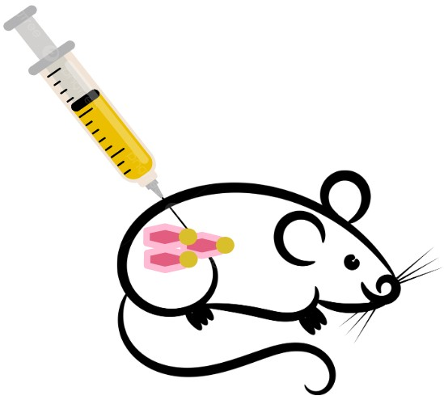
While nanoparticles have significantly advanced clinical medicine, their development must be guided by ethical responsibility, stringent regulation, and an obligation to patient and environmental safety.
Bridging Present and Future
Nanotechnology in diagnostics represents a convergence of biology, physics, and engineering, providing tools to address current limitations and open doors to new possibilities. From enhancing imaging clarity to creating portable diagnostic devices and enabling real-time genetic analysis, nanotechnology is steadily refining how we detect and understand disease. These advancements are not about replacing existing systems but improving them, making diagnostics more precise, accessible, and integrated with treatment.
Looking ahead, the true potential of nanotechnology lies in its adaptability. As research continues, we can expect tools that are smaller yet more powerful, smarter in their ability to target specific biomarkers, and more efficient in terms of cost and scalability. The integration of nanotechnology with artificial intelligence is also set to improve how medical professionals interpret and act on diagnostic information.
Despite the challenges of cost, manufacturing complexity, and regulatory approval, the progress seen so far suggests a bright trajectory. The current improvements regarding nanotechnology bring us closer to diagnostics that are not only more effective but also more equitable, ensuring that life-saving insights reach patients regardless of their location or resources.
We hope our website serves as an initial platform for collaboration between medical professionals and scientists, connecting these innovations from the research laboratory to the clinic. Although the journey is ongoing, the path forward is paved with opportunity, grounded in our shared commitment to advance healthcare for everyone.


 Click anywhere to close
Click anywhere to close


.png)
.png)
.png)